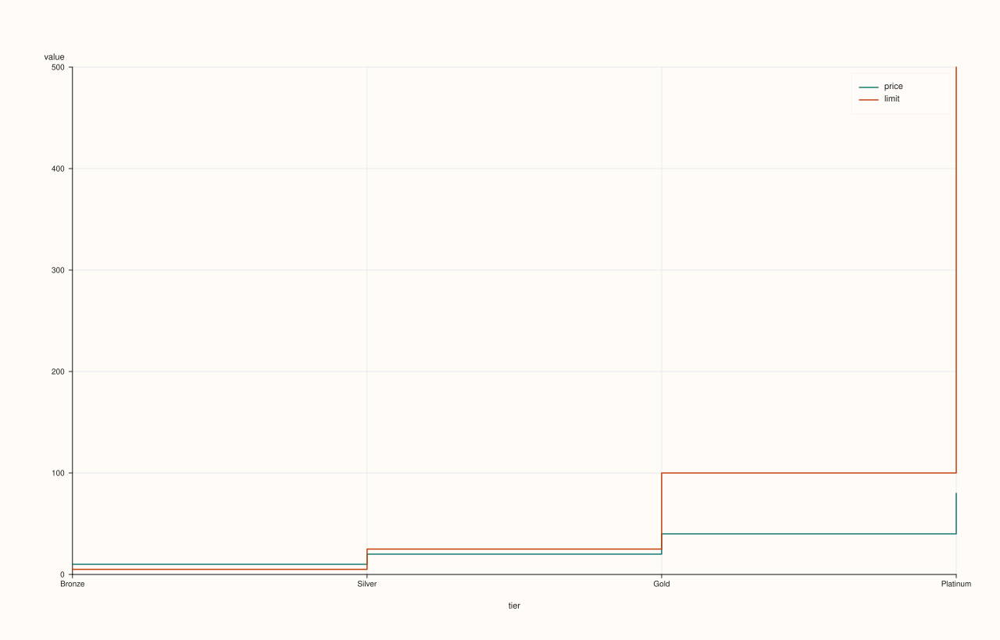

ThreadPlotAccessor::step¶
Back to ThreadPlotAccessor API Reference
Signatures¶
ThreadPlotAccessor::step() const -> pluss::pl::Studio
ThreadPlotAccessor::step(const Thread& x) const -> pluss::pl::Studio
ThreadPlotAccessor::step(const StepPlotOptions& options) const -> pluss::pl::Studio
ThreadPlotAccessor::step(const Thread& x, const StepPlotOptions& options) const -> pluss::pl::Studio
What It Does¶
Identical in shape to line() — the bound thread’s values drawn against an
optional companion x thread, wrapped into the same one- or two-column DataFrame and
delegated to DataFramePlotAccessor::step — but each
trace is drawn as a step function (horizontal-then-vertical jumps between points) instead
of straight line segments. See line() for the full naming and row-label
inheritance rules shared by every method on this accessor.
Parameters¶
x (const Thread&, optional)
Same as line()’s x — a companion thread used as the x-axis, must match
the bound thread’s size or the call throws "Thread::plot: thread size mismatch".
Omitted falls back to the wrapped frame’s own row labels.
options (StepPlotOptions)
The identical struct documented on
DataFramePlotAccessor::step (alpha,
line_width).
Returns¶
pluss::pl::Studio
A figure with one pane containing a single step trace of the bound thread’s values.
Examples¶
Example 1. No companion thread: falls back to a plain case index.
using namespace pluss::table;
auto price = Thread(pluss::make_series({9.99, 19.99, 39.99, 79.99}));
price = price.name("price");
auto chart = price.plot().step();
chart.show();

Example 2. An explicit companion thread as the x-axis.
auto tier = Thread(pluss::make_note({"Bronze", "Silver", "Gold", "Platinum"}));
tier = tier.name("tier");
auto chart = price.plot().step(tier);
chart.show();
price is drawn as a step function against tier’s categorical positions — visually
emphasizing that the price is constant within a tier and jumps at tier boundaries.

Example 3. An explicit StepPlotOptions.
StepPlotOptions options;
options.alpha = 0.8;
options.line_width = 2.0;
auto chart = price.plot().step(tier, options);
chart.show();

Notes¶
See Also¶
ThreadPlotAccessor::line: the straight-line-segment counterpart, and the canonical explanation of this accessor’s naming and row-label mechanics.DataFramePlotAccessor::step: the method this delegates to.